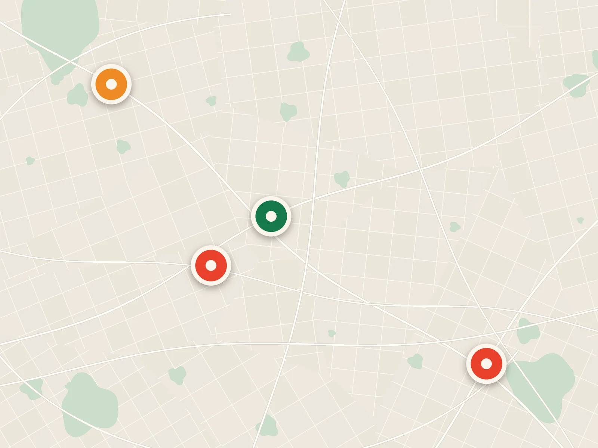
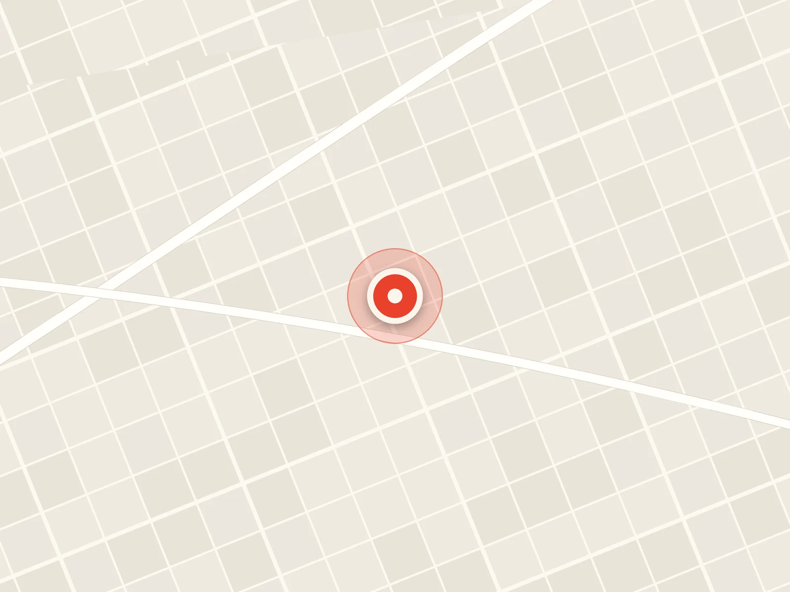
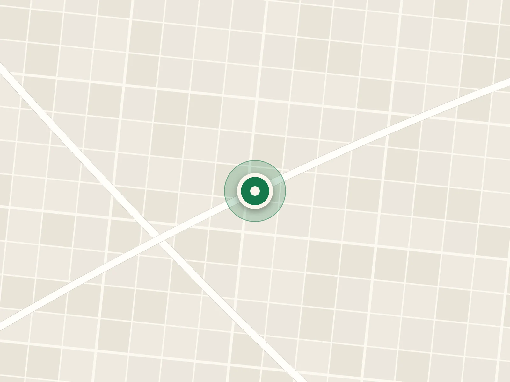
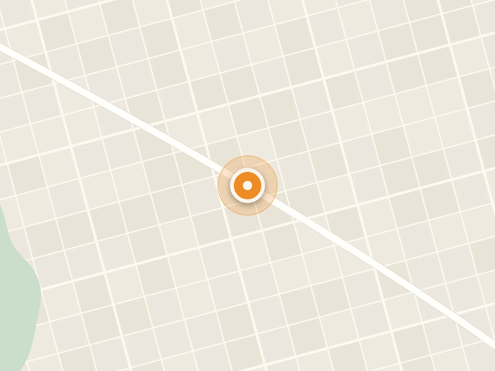
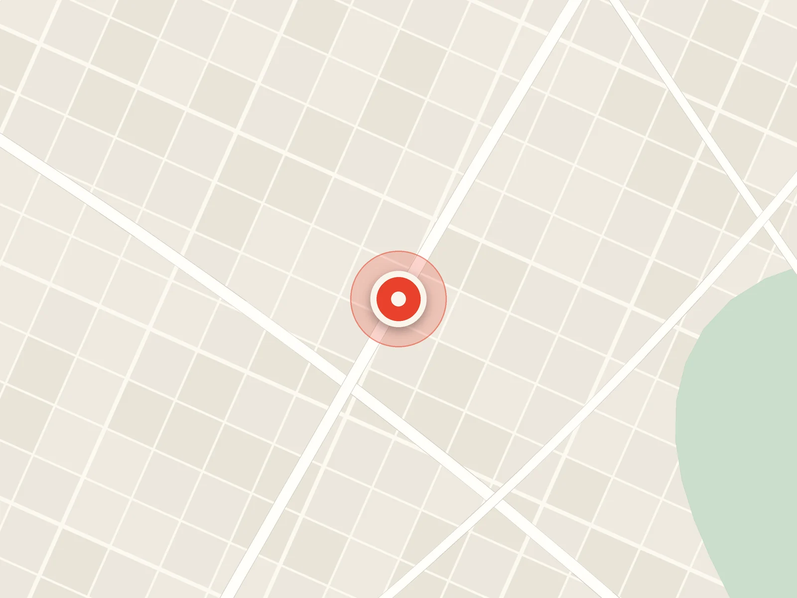

Coffee Shops
Visítanos en nuestras 4 sucursales en Ciudad de Guatemala, o pide a domicilio en todo el país.





-
Sucursal Z13
9 Calle 15-15, Zona 13, Ciudad de Guatemala
+502 2425-8520Lun–Vie 7:00–18:00 · Sáb 7:00–13:00